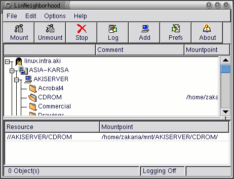

indoglobal.com
| Linux untuk Pemula :: Penggunaan :: Mengakses Windows Share dengan Samba |
|
Hosting by: indoglobal.com |
Samba adalah implementasi dari SMB protocol yaitu protocol yang digunakan oleh sistem operasi MS seperti MS Windows untuk men-sharing file dan printer. Dengan SMB anda bisa mengakses file & printer yang di-share oleh komputer Windows atau men-share file & printer di komputer linux anda. Artikel ini hanya membahas cara mengakses share file. Semua utility yang dibahas disini terdapat dalam paket samba-client yang biasanya sudah terinstall pada waktu instalasi.
smbclient berguna untuk mengakses share komputer lain dengan interface seperti ftp.
Syntaxnya adalah:
smbclient service [options] |
Dimana service dalam bentuk //namakomputer/namashare misalnya //ntserver/cdrom. Misalnya kita ingin mengakses isi direktori cdrom dari komputer ntserver kita tinggal menjalankan
[zakaria@linux zakaria]$ smbclient "//itcom2/my documents" Password: smb: \> |
Nanti smbclient akan memberikan prompt untuk password, dan passwordnya seperti biasa tidak akan ditampilkan. Kalau semuanya beres akan keluar prompt ' smb:>' pada prompt ini anda dapat mengetikkan perintah-perintah yang dipakai di ftp seperti ls, get, put, mget, mput, binary dsb. Kalau sudah selesai ketik saja quit.
Option yang sering dipakai adalah:
Koneksi dengan nama user lain dari username linux
Koneksi dengan nama workgroup selain yang di setting di /etc/smb.conf
Koneksi dengan nama host yang berbeda dengan nama host komputer
Koneksi ke host tertentu dengan IP tersebut. Sangat berguna jika samba tidak berhasil me-resolve nama host yang di tuju.
Selain dapat meng-ftp share Windows smbclient juga dapat menampilkan daftar direktori yang di-share oleh sebuah komputer dengan cara:
smbclient -L nama_komputer |
Misalnya:
[zakaria@linux zakaria]$ smbclient -L itcom2
Password:
Sharename Type Comment
--------- ---- -------
SYSTEM Disk
C Disk
MY DOCUMENTS Disk
PRINTER$ Disk
HP Printer
D Disk
A Disk
IPC$ IPC Remote Inter Process Communication
Server Comment
--------- -------
Workgroup Master
--------- -------
|
Cara lain mengakses share adalah me-mount remote share tersebut ke suatu direktori dengan menggunakan smbmount. Setelah di mount anda bisa mengakses shsre tersebut seperti anda mengakses direktori biasa. Seperti juga mount, smbmount harus dijalankan oleh root.
Syntaxnya adalah seperti berikut:
smbmount service mountpoint [-o options] |
Dimana service dalam bentuk //namakomputer/namashare misalnya //ntserver/cdrom dan mountpoint adalah direktori yang akan di mount. Parameter options-nya dalam bentuk keyword=nilai dan dipisahkan dengan koma untuk setiap parameter.
Dimana option yang sering digunakan adalah:
Koneksi dengan nama user lain dari username linux (root)
Koneksi dengan memakai nama host yang berbeda dengan nama host komputer
Koneksi dengan nama workgroup selain yang di setting di /etc/smb.conf
Koneksi ke host tertentu dengan IP tertentu misalnya 1.2.3.4. Sangat berguna jika samba tidak berhasil me-resolve nama host yang di tuju.
Contoh penggunaan:
[root@linux /root]# smbmount "//itcom2/my documents" /mnt/net/itcom2 -o netbiosname=linux Password: |
Jika anda menginginkan client yang grafis seperti Windows Network Neighborhood anda bisa menginstall program LinNeighborhood bisa dicari di http://freshmeat.net
Figure 1. LinNeigborhood in Action

Untuk informasi yang lebih lengkap anda dapat membaca:
man smbclient
man smbmount
SMB HOWTO
Dokumentasi samba di /usr/doc/samba-*/docs/
| Linux untuk Pemula :: Penggunaan :: Mengakses Windows Share dengan Samba |
Komentari Halaman Ini (di Window Baru) |